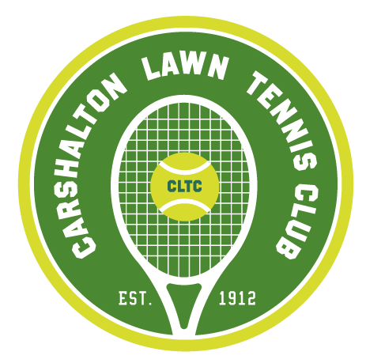

Social play
Friendly games for members looking to play, practise and meet other players.
Session days and times to be confirmed.

Carshalton Lawn Tennis ClubTable tennis at CLTC
Pick up a bat, enjoy a friendly game and be part of the club beyond the tennis courts. Table tennis is played in the clubhouse by members of a range of ages and experience.
Draft information for committee review. Current session times, playing arrangements, teams and any charges will be confirmed by the table tennis committee.

At the club
Whether you are picking up a bat for the first time, returning to the game or looking for competitive play, the table tennis group can help you find the right way to get involved.
This page is a starting point while the table tennis committee reviews the full programme and practical arrangements for members.
Getting involved
The outline below is provisional. Please contact the table tennis organiser for the current programme before attending.
Friendly games for members looking to play, practise and meet other players.
Session days and times to be confirmed.
Opportunities to develop your game and learn from other players are being reviewed.
Format and availability to be confirmed.
Information about competitive table tennis and team opportunities will be added here.
Current team arrangements to be confirmed.
Contact
Lewis can confirm the current arrangements and help you decide whether table tennis at the club is right for you.
Table tennis contact
Table tennis is arranged separately from LTA tennis membership. For joining or administration enquiries, contact Lewis or the membership secretary. Tennis membership prices do not apply.